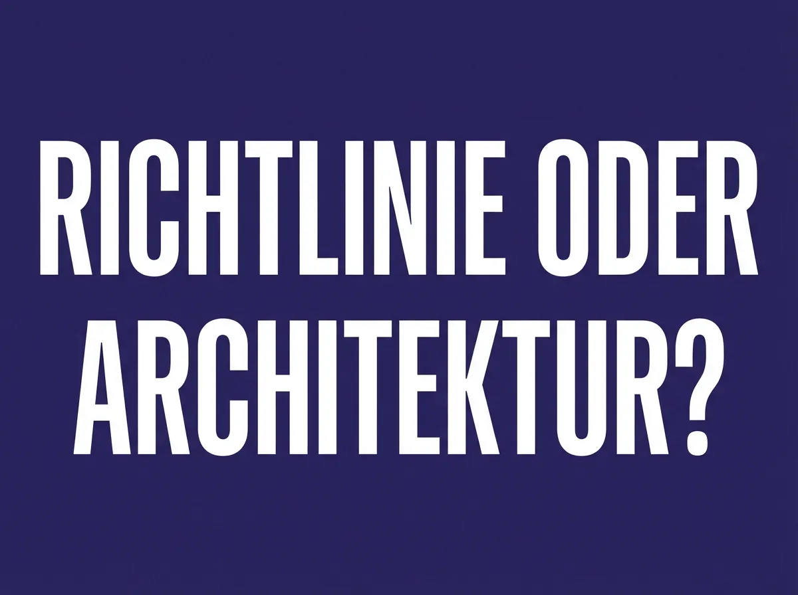

KI-Strategie · · 6 Min.
ChatGPT + Hausregeln = Custom Agent? Warum der Unterschied zählt
Aus dem Archiv: Dieser Beitrag ist vor über einem halben Jahr erschienen. Manche Zahlen und Produktnamen haben sich seither geändert.
Die häufigste Frage, die ich in Erstgesprächen mit Unternehmerinnen und Unternehmern höre, klingt ungefähr so: „Wir haben ChatGPT Team. Und eine Richtlinie, wie die Mitarbeiter es nutzen sollen. Reicht das nicht?"
Die Frage ist berechtigt. Und die ehrliche Antwort lautet: Es kommt darauf an. Für manche Anwendungen reicht ein generisches Chat-Tool tatsächlich aus. Aber für den Einsatz, den die meisten Betriebe eigentlich im Kopf haben — tägliche Nutzung, teamweit, mit sensiblen Daten — reicht es nicht. Und der Unterschied ist kein Detail. Er ist grundlegend.
Problem 1: Amnesie — ChatGPT vergisst alles
ChatGPT hat kein Gedächtnis, das Ihren Betrieb kennt. Jede neue Konversation beginnt bei null. Ihr Mitarbeiter erklärt am Montag, dass Angebote immer zwei Varianten enthalten. Am Dienstag weiß das System davon nichts mehr. Am Mittwoch erklärt es die nächste Kollegin nochmal.
Das kostet Zeit. Aber schlimmer: Es macht den Einsatz unzuverlässig. Wenn das System heute anders reagiert als gestern, obwohl die Aufgabe die gleiche ist, verliert das Team schnell das Vertrauen. Und dann wird die KI gar nicht mehr genutzt.
Ein System, das für Ihren Betrieb eingerichtet wird, merkt sich die relevanten Zusammenhänge. Es weiß, wie Ihre Angebote aufgebaut sind, welchen Ton Ihre Kundenkommunikation hat, und welche Begriffe in Ihrer Branche gelten. Nicht weil jemand es jedes Mal neu erklärt — sondern weil es einmal konfiguriert wurde und dieses Wissen dauerhaft verfügbar ist.
Problem 2: Richtlinie vs. Architektur
Die meisten Betriebe lösen die Compliance-Frage so: Ein PDF mit Regeln wird an das Team geschickt. Darin steht, was erlaubt ist und was nicht, wie man Daten anonymisiert, welche Themen tabu sind.
Das Problem: Die Richtlinie funktioniert nur, wenn jeder sie liest, versteht und konsequent anwendet. In der Praxis interpretiert jeder „anonymisiert" ein bisschen anders. Und wenn es Freitagnachmittag ist und der Bericht dringend muss, wird die Richtlinie eher kreativ ausgelegt als streng befolgt.
Bei einem konfigurierten System sind die Regeln keine Empfehlung, sondern Architektur. Sensible Daten werden von einem lokalen Modell verarbeitet, das auf den Geräten des Unternehmens läuft — sie verlassen das Haus gar nicht erst. Es anonymisiert automatisch, nicht auf Vertrauensbasis. Es unterscheidet zwischen grünen, gelben und roten Anwendungsfällen — unabhängig davon, ob die Kollegin am Freitag die Richtlinie im Kopf hat oder nicht.
Der Unterschied: Eine Richtlinie sagt „Bitte nicht". Ein konfiguriertes System ist so aufgebaut, dass sensible Daten gar nicht erst den falschen Weg nehmen.
Problem 3: Generisch vs. maßgeschneidert
ChatGPT ist ein Alleskönner. Es schreibt Gedichte, löst Matheaufgaben und formuliert Marketing-Texte. Aber es kennt weder Ihre Branche noch Ihre Kunden noch Ihre Art zu kommunizieren.
Wenn ein Installateurbetrieb in Oberwart ein Angebot schreibt, klingt das anders als bei einer Agentur in Wien. Die Fachbegriffe sind andere, der Ton ist ein anderer, die Struktur ist eine andere. ChatGPT liefert einen generischen Text, den Sie jedes Mal anpassen müssen. Ein konfiguriertes System liefert beim ersten Mal einen Entwurf, der nach Ihrem Betrieb klingt.
Das spart nicht nur Zeit. Es sorgt dafür, dass die Qualität gleichbleibt — egal ob der Chef das Angebot schreibt oder der Lehrling.
Problem 4: Kein Audit Trail
Wenn mit ChatGPT etwas schiefgeht — ein Mitarbeiter gibt Kundendaten ein, ein fehlerhafter Text geht raus, eine falsche Zahl landet im Bericht — können Sie nicht nachvollziehen, was passiert ist. Die Konversation ist privat, die Verantwortung unklar, die Dokumentation nicht vorhanden.
Für den EU AI Act und die DSGVO ist das ein Problem. Aber auch ganz praktisch: Ohne Nachvollziehbarkeit können Sie weder Fehler korrigieren noch daraus lernen.
Ein dokumentiertes System protokolliert, welche Anfragen gestellt wurden, welche Daten verarbeitet wurden und welche Ergebnisse zurückkamen. Nicht um Mitarbeiter zu überwachen — sondern um im Ernstfall belegen zu können, dass Ihr Betrieb verantwortungsvoll mit KI umgeht.
Problem 5: Nur Text vs. Multi-Modal
Im Arbeitsalltag kommen Informationen nicht nur als getippte Fragen. Da sind Sprachnachrichten von Kunden, fotografierte Lieferscheine, PDF-Verträge, gescannte Rechnungen, handschriftliche Notizen.
ChatGPT in der Basisversion arbeitet primär mit Text. Ein konfiguriertes System kann Sprachnachrichten transkribieren, PDFs auslesen, Bilder analysieren und alles in einem Zusammenhang verarbeiten. Der Mitarbeiter schickt eine Sprachnachricht mit den Eckdaten, das System macht daraus einen strukturierten Angebotsentwurf. Ohne Umweg, ohne Abtippen.
Was kostet der Unterschied wirklich?
Die häufigste Sorge: Ein maßgeschneidertes System muss doch viel teurer sein als ein ChatGPT-Abo.

Mit KI erstelltRechnen wir nach: ChatGPT Team kostet rund 25 Euro pro Person und Monat. Bei 10 Mitarbeitern sind das 250 Euro monatlich, 3.000 Euro im Jahr. Nach drei Jahren haben Sie 9.000 Euro ausgegeben — für ein System, das Ihren Betrieb immer noch nicht kennt.
Ein konfiguriertes KI-System wird einmalig eingerichtet, typischerweise in einem Rahmen, der mit KMU.DIGITAL bis zu 60 Prozent gefördert werden kann. Die laufenden Kosten für die KI-Modelle selbst sind oft niedriger als die Team-Lizenz, weil gezielter genutzt wird statt pauschal für jeden.
Dazu kommt: Für die Verarbeitung sensibler Daten können lokale Open-Source-Modelle eingesetzt werden, die keine laufenden Lizenzkosten verursachen. Cloud-Modelle kommen nur dort zum Einsatz, wo ihre Leistung benötigt wird — mit nutzungsabhängigen Kosten, die sich am tatsächlichen Bedarf orientieren.
Langfristig ist die maßgeschneiderte Lösung in vielen Fällen nicht teurer — sie ist günstiger. Und sie liefert mehr.
Wann ChatGPT tatsächlich reicht
Fairerweise: Nicht jeder Betrieb braucht ein eigenes System. ChatGPT mit einer klaren Richtlinie reicht aus, wenn:
- Nur wenige Mitarbeiter es gelegentlich nutzen
- Keine sensiblen Daten ins Spiel kommen
- Die Anwendung einfach ist: Texte umformulieren, Recherche, Brainstorming
- Kein Compliance-Nachweis nötig ist
Wenn das auf Ihren Betrieb zutrifft, ist ein ChatGPT-Abo eine vernünftige Lösung. Nicht alles braucht ein maßgeschneidertes System.
Wann Sie mehr brauchen
Ein konfiguriertes System wird dann sinnvoll, wenn:
- Tägliche Nutzung durch mehrere Mitarbeiter geplant ist
- Sensible Daten verarbeitet werden (Kundendaten, Verträge, Finanzen)
- Gleichbleibende Qualität über das ganze Team hinweg wichtig ist
- Compliance-Anforderungen dokumentiert werden müssen (EU AI Act, DSGVO)
- Branchenspezifische Sprache und Abläufe relevant sind
Je mehr dieser Punkte zutreffen, desto wahrscheinlicher ist es, dass eine ChatGPT-Lizenz mit Richtlinie nicht ausreicht.
Weitere Beiträge in dieser Serie
- [KI im Betrieb: Warum Schulung allein nicht reicht](/blog/ki-im-betrieb-warum-schulung-allein-nicht-reicht) — Was nach dem Workshop passieren muss
- [Das Schleusen-Prinzip: Cloud und lokal kombiniert](/blog/schleusen-prinzip-cloud-ki-hybrid) — Wie sensible Daten sicher bleiben
- [Hybrides KI-Setup für KMU](/blog/hybrider-ansatz-cloud-lokal-ki-kmu-2026) — Cloud und lokale Modelle im Zusammenspiel
KI-Modelle arbeiten probabilistisch — ein konfiguriertes System folgt den eingerichteten Regeln zuverlässig, ersetzt aber keine technische IT-Sicherheitslösung. Es ist eine organisatorische und architektonische Maßnahme, die den sicheren Umgang mit KI im Betrieb erheblich verbessert.
Nächster Schritt
Sie überlegen, ob ChatGPT für Ihren Betrieb reicht — oder ob ein konfiguriertes System sinnvoller wäre? In einem kostenlosen Erstgespräch schauen wir uns Ihre konkrete Situation an. Keine Verkaufspräsentation, sondern eine ehrliche Einschätzung.
Armin Fradler begleitet Bildungsorganisationen und Teams beim Umgang mit KI und unterrichtet selbst in der Erwachsenenbildung.